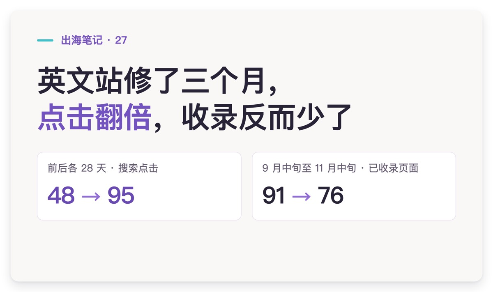
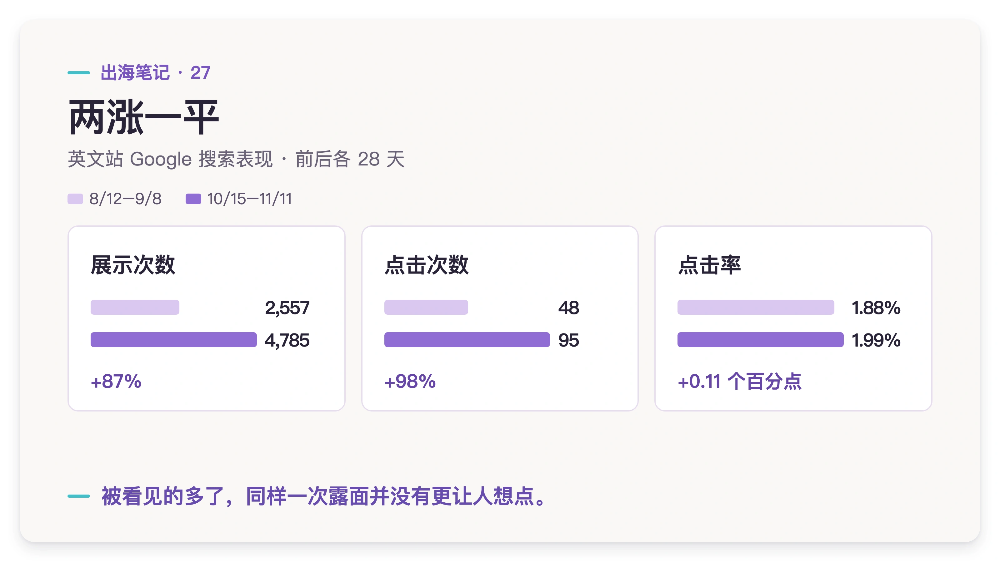
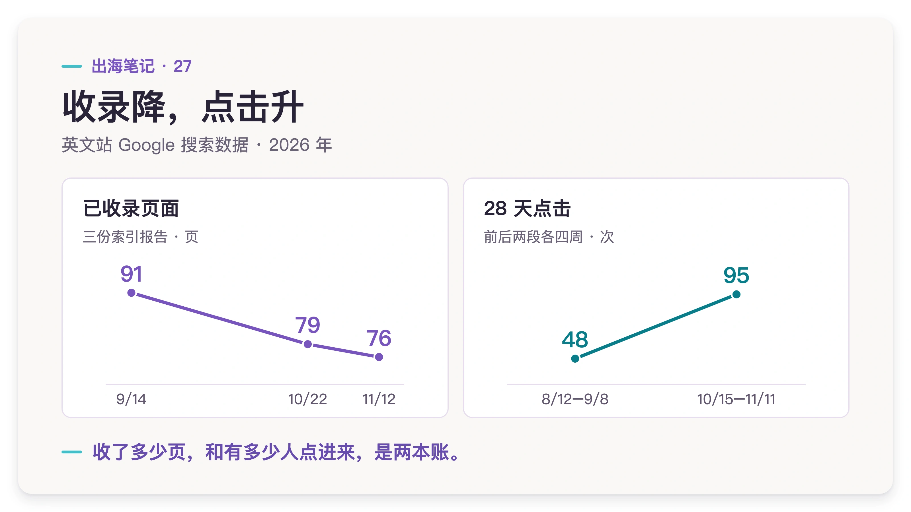
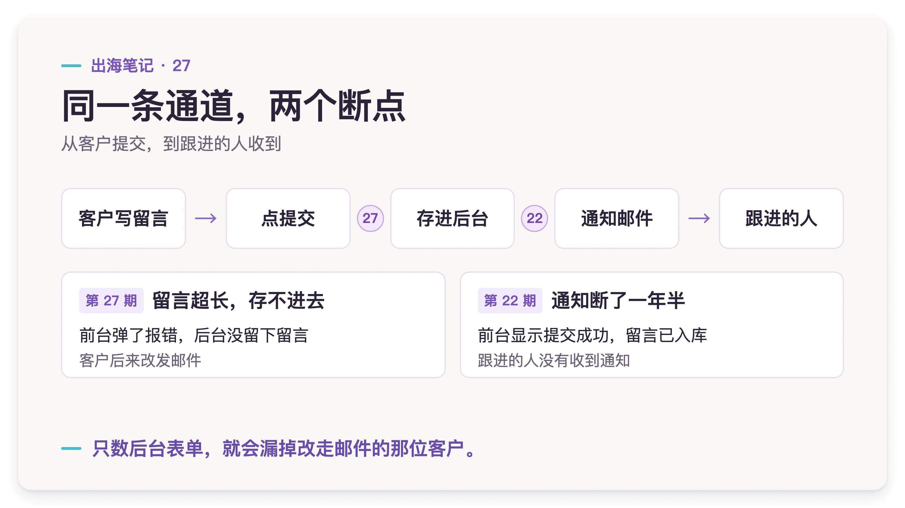
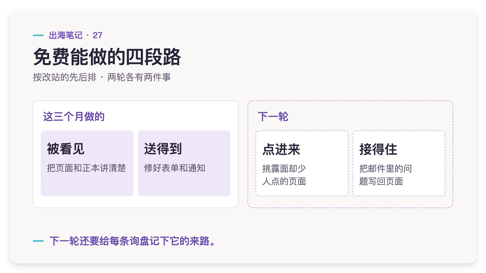

22期《找到你，不等于到达你》里，我说过一句不太中听的话：在网站这件事上，绝大多数外贸企业只有付费动作，没有免费动作。
那一期写的就是免费动作。补页面标题和描述，修主标题，理清重复网址和站点地图，再修好断了一年半的询价通知。写到结尾，我给自己留了一句：
排名会不会动、多久动、动多少，我现在说什么都是在编。那部分还得等三个月。
三个月到了。
一、读数：被看见的次数翻了一倍
我从谷歌的搜索后台（Google Search Console）导出了8月12日到11月11日的数据，一共92天。头尾各取28天对比，两边都是完整的四周。
| 指标 | 最初28天 | 最后28天 |
|---|---|---|
| 展示次数 | 2,557 | 4,785 |
| 点击次数 | 48 | 95 |
| 点击率 | 1.88% | 1.99% |
| 平均排名 | 27.9 | 17.6 |
展示多了87%，点击多了98%。
这张表我最先看的是点击率那一行。它几乎没动：每一百次展示，还是换来两次点击。

所以这次的增长来自"被看见"。站在更多的搜索里露了面，平均位置往前挪了，点进来的人跟着多了。同样一次露面，并没有变得更让人想点。
点击率没动这件事，我后面还会回来说。
绝对数也要摆出来：最后28天，平均每天三四次搜索点击。对一个做小众仪器的外贸站，这个变化是实在的，离"躺着等订单"还很远。
二、两件和直觉相反的事
第一件：收录的页面变少了。
9月中旬，报告里已收录的页面是91个；11月12日那份报告里，是76个。同一段时间，展示和点击都在涨。
重复网址被归到正本上、旧链接做了跳转，都会让"已收录"这个数往下走。收录只回答页面进没进索引，后面还有三道关：它会因为哪些词出现，排在第几，有没有人点。拿收录页数当成绩单，很可能在做对的时候以为自己做错了。

第二件：搜索词里冒出来的，是我们没盯着的那条产品线。
可见的高展示词里，一组作业设备相关的词最突出，指向站里另一条产品线。页面报告也对得上：这一类栏目和相关页面，三个月合计69次点击。
网站怎么分栏目，是我们自己的组织方式；客户在搜索框里怎么问，是他的作业方式。我们以为站上的主角是哪条线，搜索那一头未必这么看。
这张词表有个限度要先说：谷歌不会披露全部搜索词。全期225次点击里，能对上具体词的只有20次。它适合用来找线索，下结论还不够。
三、差点又少数了一个客户
搜索的账看完，该数询盘了。
最顺手的数法，是打开网站后台的留言列表，剔掉测试、推销和机器垃圾，同一个人重复提交的合并成一条。
数到一半，我想起了九月底的一件事。
一位海外客户在英文站的询价表单里写了一段长留言。四分钟里，他点了七次提交，每次页面都弹出同一行报错：服务器繁忙，请稍后再试。（英文站上，弹的是中文。）最后他放弃了表单，把同样的内容发到了我们的邮箱。
查下来，留言那一栏在数据库里只给了255个字符的位置。他写了三百多个字符，超出的那一刻，整条留言被拒，一个字都没存下。
这个上限从建站起就在那里。这些年凡是写得长一点的询盘，都进不来。而写得长的，往往是最认真的那批人：规格、工况、项目背景，一条一条列清楚。
服务器日志里还能看到，前一个月有另一个访客同样连着提交了五次，也没有留下任何记录。那是谁、想问什么，已经找不回来了。
22期的结尾我写过：别人认真写给你的那些字，可能也从来没有到达过任何地方。三个月后，它又发生了一次，只是换了位置。上一次断在通知，这一次断在存进去之前。

修它很简单，把那一栏改成能装下长文本就行。难的是发现。它不报警，后台也什么都看不到，只有前台一个客户在反复点提交。
回到数询盘这件事上：只数后台表单，这位客户就不存在。他明明是从网站来的，认真写好了需求，只是最后换了一个入口。
所以这次我把邮件也放进来，按"同一个客户、同一件需求"去重。从8月18日到11月11日：
- 英文站成功提交的表单里，有7条具体业务需求
- 填表失败、转发邮件的，有1条
- 合起来，至少8条有具体需求的询问经过了英文网站
"具体需求"指对方在问设备、项目或报价，不等于成交。另有几封直接发到邮箱的询价，规格写得很细，却没说是从哪里找到我们的。它们可能经过网站，证据接不上，就单独放着，不算进来。8条和225次点击，我也没有拿来相除：点击不是人数，询盘也不都来自搜索。
客户最后用的入口，和你一直在数的入口，可能不是同一个。
四、免费能做的，才做了一半
回到点击率那一行。
这三个月做的事，大多在解决"被看见"和"送得到"：页面讲清自己是什么，搜索引擎认清哪一页是正本，客户写的字能送到人手里。点击率没动，说明还有一半没开始。露了面之后，能不能让对的人点进来；点进来之后，页面能不能接住他的问题。

这一半，仍然不用买流量。下一轮我准备先做三件，手上有英文站的人也可以照着查。
第一，挑出"露了面却没人点"的页面。
在搜索后台里按页面看，找展示不少、排名不算太靠后、点击却很少的那几页，再确认它们对应的搜索词和你的业务对得上。然后去看它在搜索结果里长什么样：标题是不是只有一个型号，下面那两行摘要有没有说它能干什么。页面开头也一样，客户读完前三行，能不能判断这是不是他要找的设备。
标题和摘要最后由谷歌决定怎么显示，改了不保证原样出现，但页面上写清楚，是它能抓到好内容的前提。
一次只改几页，记下改了哪页、哪天改的，过一个观察周期再看这几页的展示和点击。全站一起改，改完就只能盯着总数猜。
第二，把询价邮件里的问题写回产品页。
这三个月的询问里，有人问设备能不能装上无人船，有人要做管线埋深调查，有人要一整套收放系统。型号之外，他们想知道的是：我的平台能不能装，我的现场条件合不合适，最后交出来的是什么。
客户在邮件里问的，就是页面上缺的。同一个问题如果每次都要在邮件里从头解释，它就该写进页面了：适合什么任务，需要客户提供什么条件，哪些要看现场；有实测资料的，交代清设备、工况和结果。这也是22期说过的，别处没有的、具体的、可核对的东西。能补在现有页面的就补在现有页面，不为凑数量另开一堆相似的页。
第三，给每条询盘记三栏来路。
| 要记的事 | 它回答什么 |
|---|---|
| 最初怎么找到我们 | 搜索、展会、转介绍，还是没问到 |
| 接触过哪些资料 | 网站、产品页、彩页，还是不清楚 |
| 最后怎么联系 | 表单、邮件、电话或别的入口 |
知道哪一栏就填哪一栏，不知道的空着；合适的时候，在往来里顺口问一句是怎么找到我们的。比起把每条都填成"官网来的"，这样的账下一轮才接得上。这一件不会抬高排名，但三个月后还能不能回答"值不值"，就看它。
收：三个月后的答案
三个月前留下的问题，现在可以回答了。排名动了，前后各28天的平均位置从27.9到17.6；点击从48次到95次；经过英文站的具体询问，至少8条。
三个月里做的这些事，没有一件需要买流量。改的是自己的页面，修的是自己的通道。
广告能买来露面。露面之后的那段路，只能自己一段一段修。
22期我请你用自己的邮箱，去填一次自己网站的询价表。这次可以再填一次，写长一点，写到三百字，像一个正在选型的客户那样。
看看它能不能存进去。